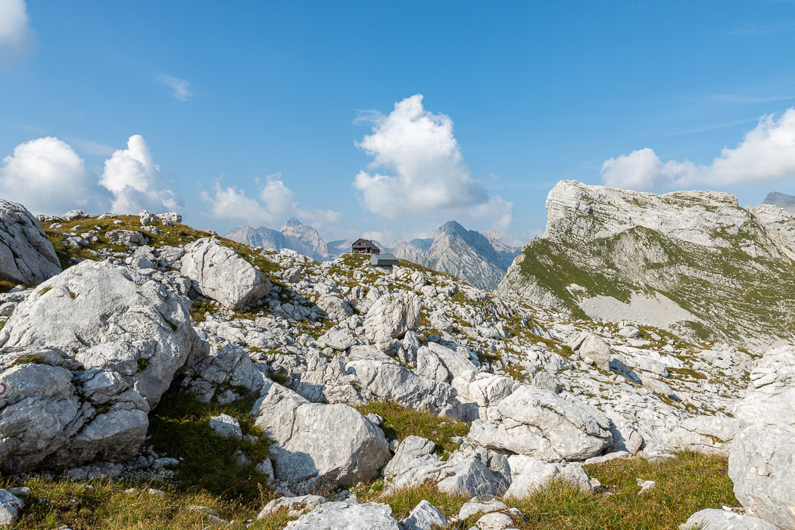

Das Hotel am Savica Wasserfall ist der ideale Ausgangspunkt für eine Wanderung zu den „Sieben Seen“, eines der schönsten Täler in den Julischen Alpen. Wir hatten eine zweitägige Rundwanderung geplant. Der Weg begann quasi direkt vor der Tür. Das erste Stück war ziemlich schweißtreibend, weil wir die scheinbar senkrechte 700m hohe Komarča-Wand hoch mussten. Man wundert sich immer wieder wo Wanderwege einen hinbringen können. An einigen Stellen halfen Drahtseile und -stufen.
Oben angekommen war aber noch lange nicht oben. Ein paar Stunden ging es noch durch schöne Wälder. Verstreut lagen die Sieben Seen im Tal und schimmerten grün vor sich hin. Später wich der Wald den kleineren Latschenkiefern und anderen Sträuchern. Zu den Seiten türmten sich schroff die ersten hohen Gipfel auf, deren Felskronen senkrecht aus den schrägen Geröllflanken ragten. Es wurde immer felsiger. Kurz vor dem Abzweig zur Hütte markierte eine kleine Kolonie Edelweiß am Wegesrand das Ende der Pflanzenwelt - ab dort nur noch Steine.

Die Hütte auf 2000m war ziemlich einfach und hatte leider noch nicht mal frisches Wasser. Trotzdem waren wir nach über sieben Stunden froh, angekommen zu sein. Gerade rechtzeitig um noch etwas in der Sonne zu sitzen bis mit der Dunkelheit ein Unwetter aufgezogen ist.
Am nächsten Morgen sind wir früh weiter gelaufen. Der Gipfel Kanjavec lag noch 500m höher. Beim Aufstieg hatten wir das zweifelhafte Vergnügen eine Geröllhalde aus der Nähe zu bewundern: Zwei Schritte hoch gehen, einen wieder runter rutschen. Leider war das Panorama das gegenüber liegenden Triglav von Regenwolken getrübt.
Der Weg bergab war deutlich schlimmer als der Hinweg. Wir mussten insgesamt 1800 Höhenmeter absteigen. Die meisten Strecken waren zu steil und zu steinig um sie bequem zu laufen. Nach wirklich endlosen, immer weiter abfallenden Tälern haben wir nach achteinhalb Stunden bei der ersten Hütte mit Straßenanschluss aufgegeben und Radler, Gulasch und ein Taxi bestellt.